Wenn die abhängige Variable nur 0 oder 1 kennt
Gidon T. Frischkorn
29. Oktober 2026
Bisher Statistik I: Binomialverteilung, Odds im Bayes-Beispiel. Letzte Sitzung: lineare Regression als Modell, eine Normalverteilung, deren Mittelwert von \(x\) (z. B. Anzahl Sitzungen) abhängt
Jetzt Was ändert sich, wenn die abhängige Variable nur 0 oder 1 sein kann?
Danach Koeffizienten als Odds Ratios interpretieren, Schätzung, glm(family = binomial) in R
Laufendes Beispiel (simulierte Daten): 200 Patient:innen nach einer Psychotherapie. Remission ja (1) oder nein (0), je nach Anzahl Therapiesitzungen (1 bis 40).
Diagnose (Beispiel Depression nach DSM-5): mindestens 5 von 9 Symptomen über zwei Wochen, darunter gedrückte Stimmung oder Interessenverlust. Die Kriterien sind erfüllt oder nicht.
●●●●|●●○○○ 6 von 9 Symptomen: über der Schwelle
Kriterien weiter erfüllt: keine Remission, \(Y = 0\)
●●●○|○○○○○ 3 von 9 Symptomen: unter der Schwelle
Kriterien nicht mehr erfüllt: Remission, \(Y = 1\)
Die Symptome gehen schrittweise zurück, die Diagnose kennt nur ja oder nein. Deshalb ist auch Remission binär.
Fotos: Pixabay «Free-photos», Jesse Uli (Unsplash); CC0, via Wikimedia Commons
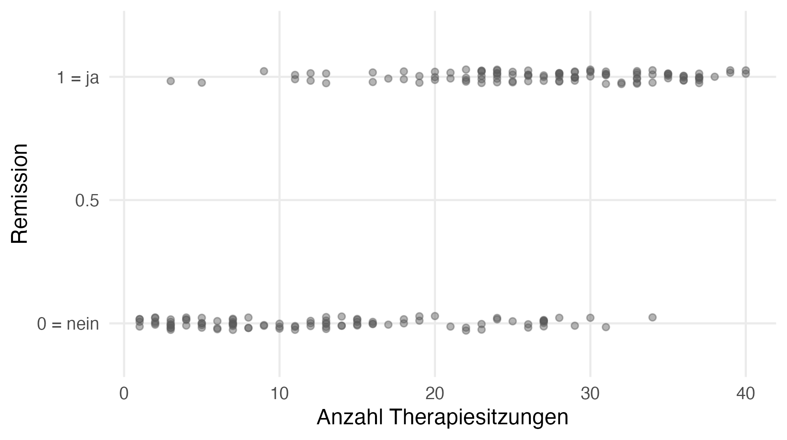
KlickerUZH: Was passiert, wenn wir eine lineare Regression mit einer binären abhängigen Variable rechnen?
A. Das ist kein Problem, die Regressionsgerade beschreibt die Daten akzeptabel.
B. Für manche Personen sagt die Gerade Werte unter 0 oder über 1 vorher. Das ist nicht ideal.
C. Eine solche Analyse kann man nicht rechnen, R bricht mit einer Fehlermeldung ab.
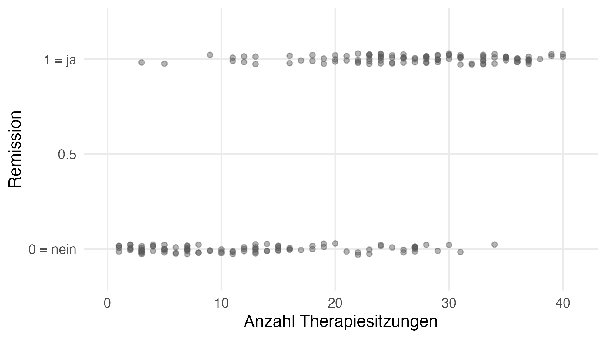
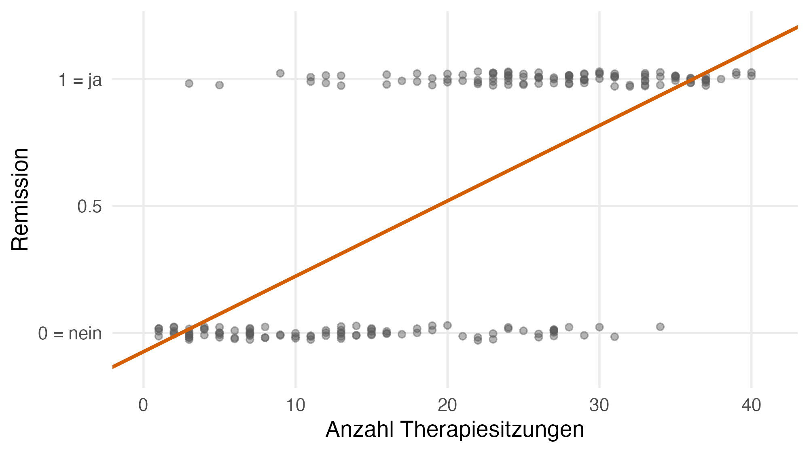
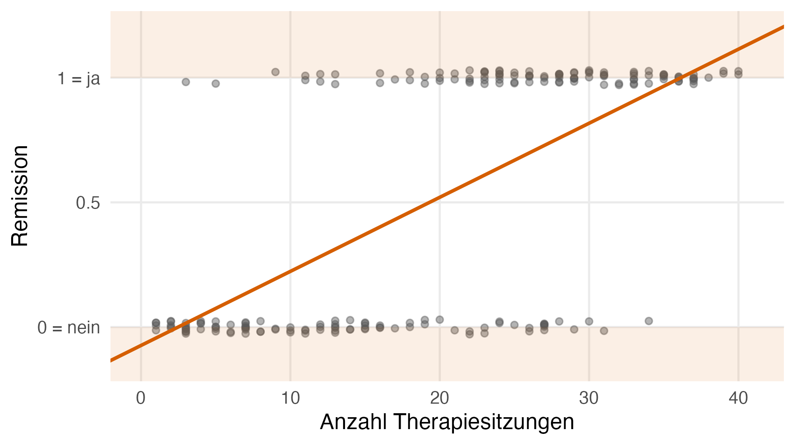
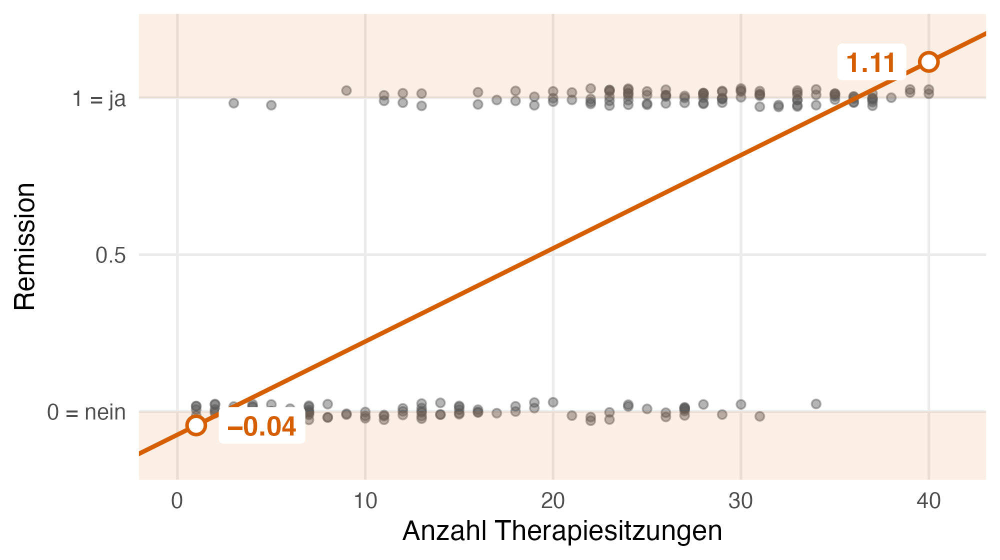
Vorhersage bei 40 Sitzungen: 1.11, also eine «Wahrscheinlichkeit» von 111 %? Bei 1 Sitzung: −0.04. 20 von 200 vorhergesagten Werten liegen ausserhalb von 0 bis 1.
Lineare Regression
\[Y_i \sim \mathcal{N}(\mu_i,\ \sigma^2), \quad \mu_i = \beta_0 + \beta_1 x_i\]
Der Wert \(Y_i\) von Person \(i\) ist normalverteilt (\(\mathcal{N}\)) mit Mittelwert \(\mu_i\) und Varianz \(\sigma^2\); \(\mu_i\) liegt auf der Geraden mit Achsenabschnitt \(\beta_0\) und Steigung \(\beta_1\).
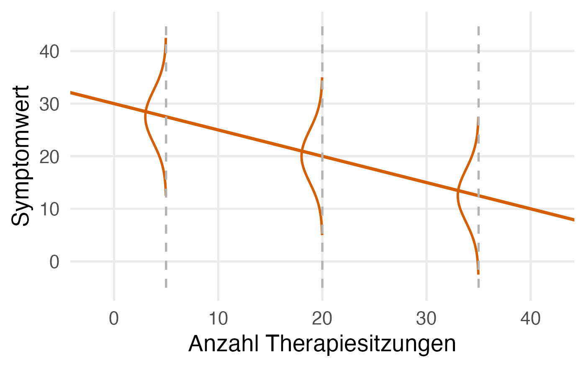
Binäre abhängige Variable: Remission
\[Y_i \sim \mathcal{B}(1,\ \pi_i), \quad \pi_i = \ ?\]
Binomialverteilung (\(\mathcal{B}\)) mit einem Versuch: \(Y_i\) ist 1 (Remission) mit der Wahrscheinlichkeit \(\pi_i\), sonst 0.
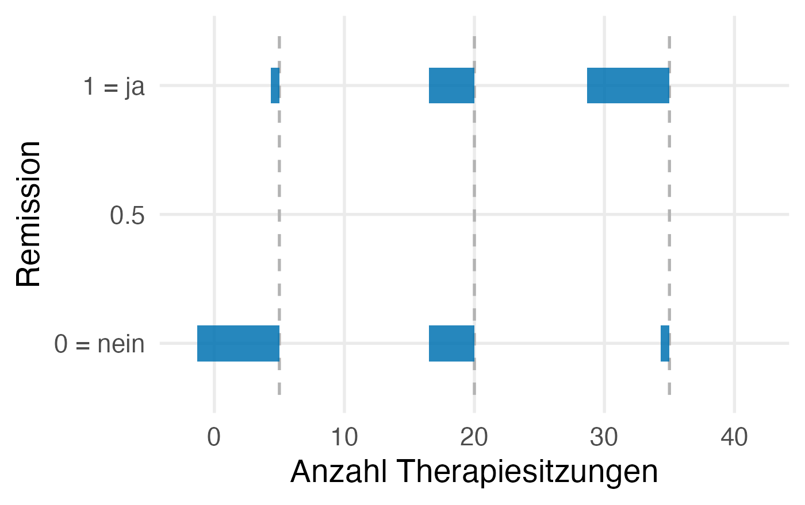
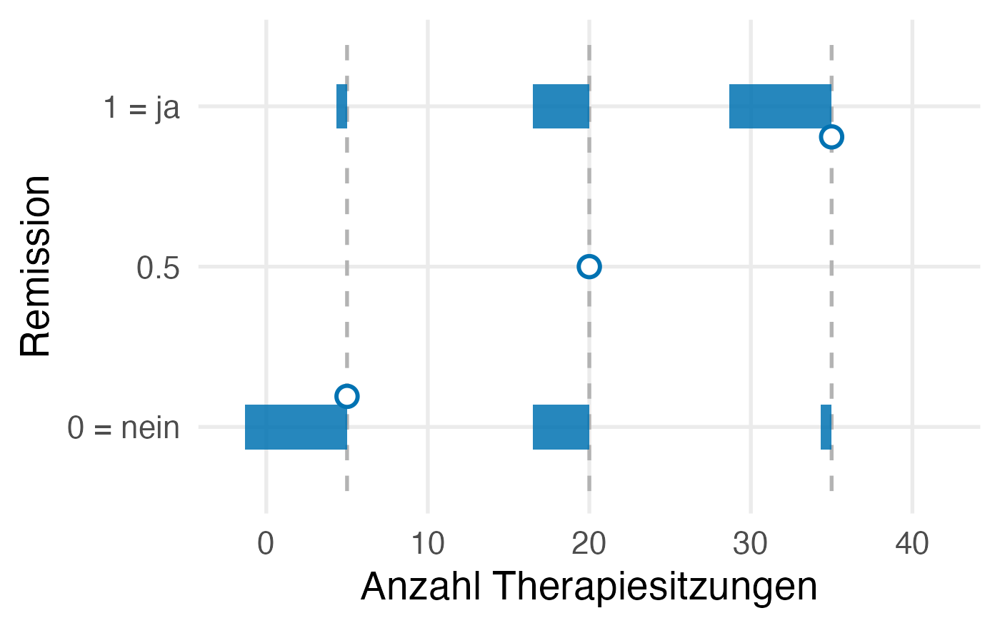
Gleiche Struktur: eine Verteilung und ein Parameter, der von \(x\) abhängt.
\(\pi_i\) liegt zwischen 0 und 1, aber \(\beta_0 + \beta_1 x_i\) kann jeden Wert annehmen.
| Wahrscheinlichkeit | \(\pi\) | 0 bis 1 | |
| Odds | \(\dfrac{\pi}{1-\pi}\) | 0 bis ∞ | 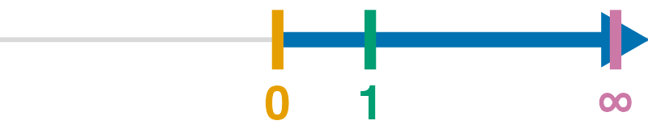 |
| Log-Odds | \(\ln\!\left(\dfrac{\pi}{1-\pi}\right)\) | −∞ bis ∞ | 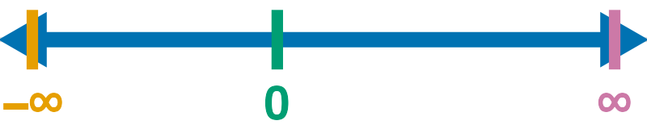 |
\(\pi\): Wahrscheinlichkeit einer Remission · Odds: Wahrscheinlichkeit dafür geteilt durch dagegen · \(\ln\): natürlicher Logarithmus · \(\infty\): unendlich · Farbe: dasselbe \(\pi\)
Denkpause: Wenn \(\pi = .8\), wie gross sind die Odds?
\(.8 / .2 = 4\): Auf 4 Remissionen kommt eine Nicht-Remission. Kennen Sie aus dem Bayes-Beispiel in Statistik I (Prior-Odds).
\[Y_i \sim \mathcal{B}(1,\ \pi_i)\]
\[\pi_i = \ ?\]
\[\ln\!\left(\frac{\pi_i}{1-\pi_i}\right) = \beta_0 + \beta_1 x_i\]
Zurück zur Wahrscheinlichkeit, wie im Bayes-Beispiel:
\[\text{Odds}_i = e^{\text{Log-Odds}_i} = e^{\beta_0 + \beta_1 x_i}\]
\(e \approx 2.718\) (Eulersche Zahl); «\(e\) hoch …» macht den Logarithmus \(\ln\) rückgängig.
\[ \pi_i = \frac{\text{Odds}_i}{1 + \text{Odds}_i} = \frac{e^{\beta_0 + \beta_1 x_i}}{1 + e^{\beta_0 + \beta_1 x_i}} \]
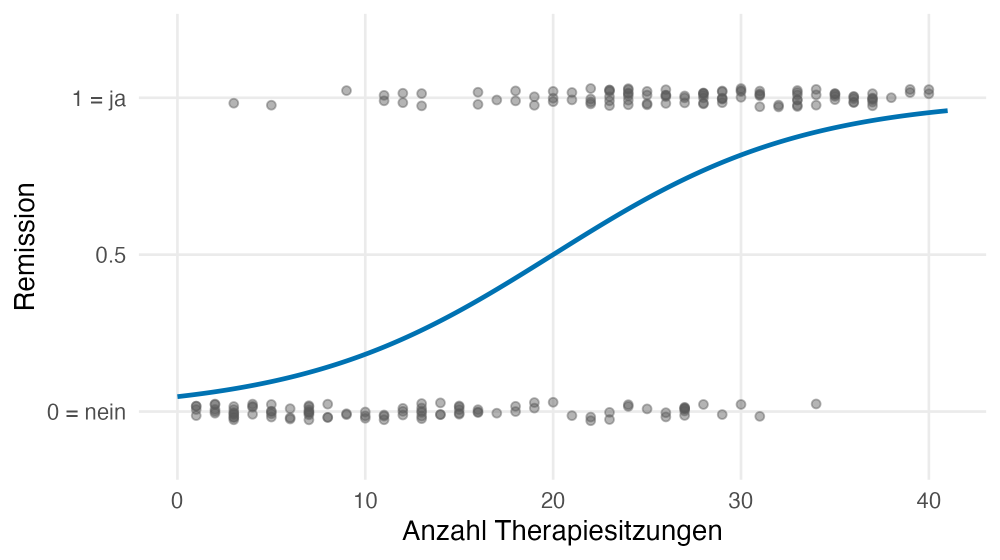
Kurve mit Achsenabschnitt \(\beta_0 = -3\) und Steigung \(\beta_1 = 0.15\)
KlickerUZH (K-Prim): Welche der folgenden Aussagen über die logistische Regression treffen zu? Wählen Sie für jede Aussage aus, ob sie richtig oder falsch ist.
A. \(\mathcal{B}(1, \pi_i)\) gibt jeder Person ein eigenes \(\pi_i\), so wie \(\mathcal{N}(\mu_i, \sigma^2)\) jeder Person ein eigenes \(\mu_i\) gibt.
B. In der logistischen Regression ist \(\pi_i\) eine lineare Funktion der Anzahl Sitzungen \(x_i\).
C. Wenn \(\pi = .75\), betragen die Odds \(3\).
D. Log-Odds liegen wie Wahrscheinlichkeiten zwischen 0 und 1.
Als Nächstes: Was bedeutet die Steigung \(\beta_1\)? Odds Ratios · Schätzung · in R:
Material, Daten und R-Code:
https://gidonfrischkorn.github.io/lehrprobe-logistische-regression/
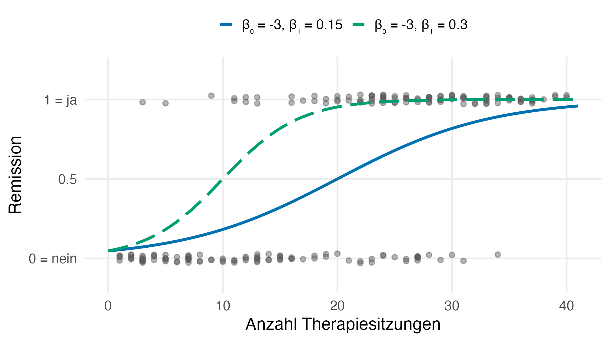
Remission so wahrscheinlich wie keine (\(\pi = .5\)): mit \(\beta_1 = 0.15\) nach 20 Sitzungen,
mit doppelter Steigung (\(\beta_1 = 0.3\)) schon nach 10. Allgemein: nach \(-\beta_0/\beta_1\) Sitzungen.
Lehrprobe · Logistische Regression · BSc Psychologie, Statistik III